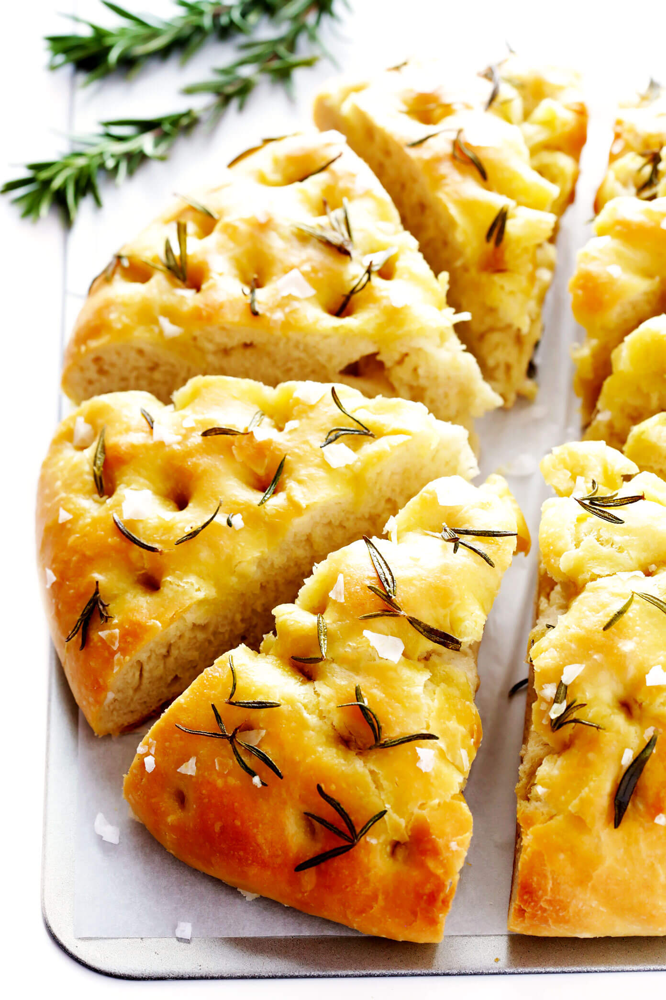

Focaccia
 1
1 30 minutes
30 minutes Source
Source Salty
Salty

270 gflour275 glukewarm water1 tspyeast1 tspsalt
Mix flour, yeast, water, salt and any extras you’re adding in (e.g., minced sun dried tomatoes, some mixed herbs and black pepper).
Lightly grease with olive oil, cover and leave in the fridge over night (12 hours roughly).
The next morning deflate and transfer to a cast iron skillet or baking pan greased with a good glug of olive oil. Cover and leave for another couple hours (I usually wait 4 hours in time to bake for lunch).
Preheat the oven to 210°C.
Before baking, use your finger to indent lots of crevices and drizzle with more olive oil (around 2 tablespoons). Sprinkle with a little salt and any other topping you want.
Immediately put into the oven for 25-30 minutes.